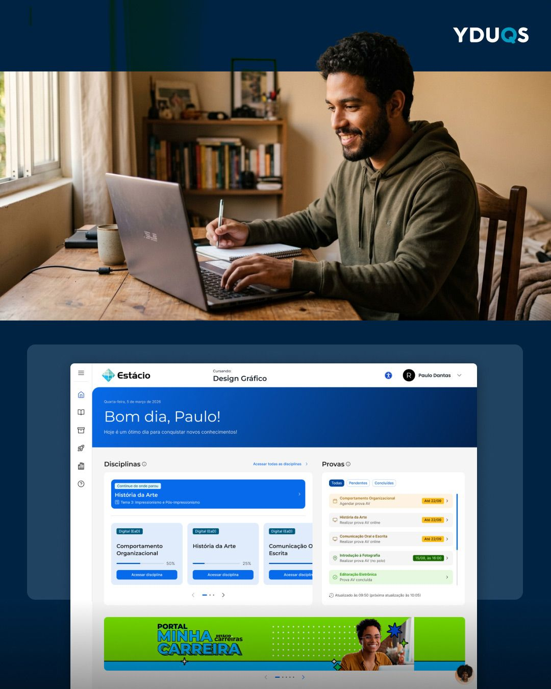
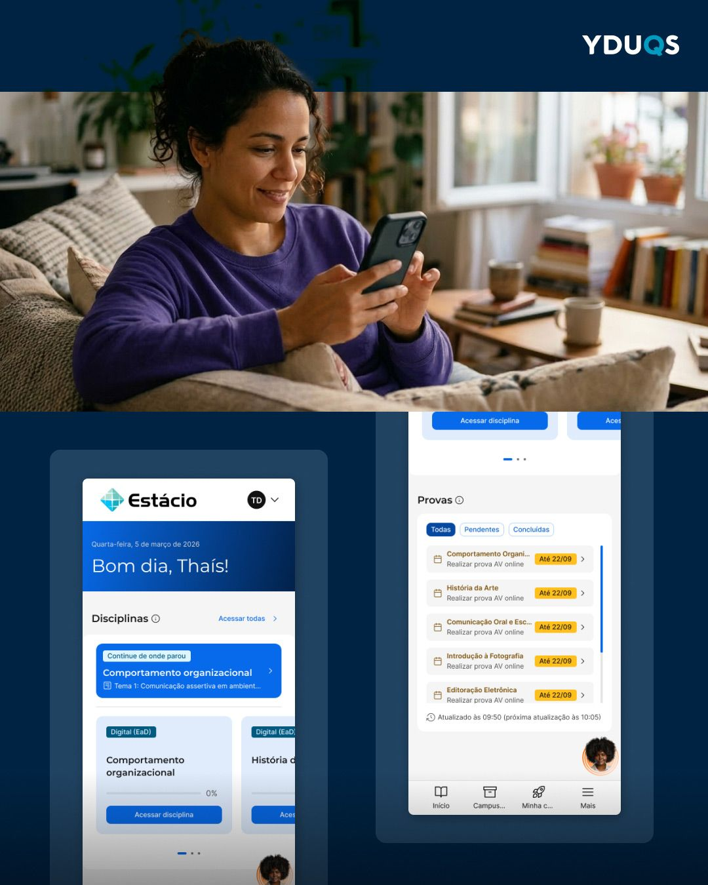
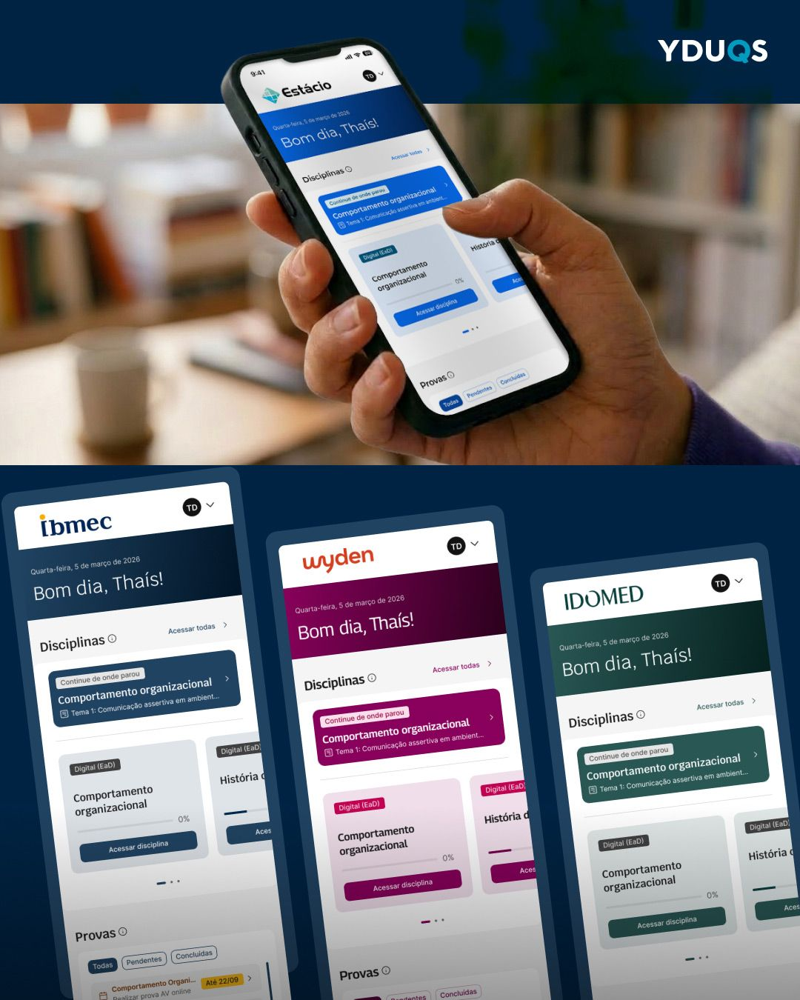

O problema e o cenário
A Sala Virtual do Aluno (SAVA) é o principal ponto de contato digital dos estudantes da YDUQS. A home anterior não refletia as necessidades reais dos alunos: informações dispersas, navegação confusa e falta de visibilidade sobre progresso acadêmico.
O time de produto identificou a oportunidade de transformar a interface em uma ferramenta de autogestão, devolvendo tempo e foco ao aluno.
O que encontramos
- Ausência de visibilidade sobre progresso nas disciplinas
- Navegação baseada em estrutura interna, não em comportamento do aluno
- Falta de atalhos para ações críticas como provas e prazos
- Inconsistência visual entre marcas do grupo (IBMEC, Estácio)
- Recurso "Continue de onde parou" com precisão insuficiente
Decisões e raciocínio
Optamos por uma abordagem centrada em dados reais de comportamento e uso. Reorganizamos a arquitetura de informação com base em métricas de navegação e feedback qualitativo dos alunos.
"Fomos além de uma tela nova — entregamos uma experiência estratégica para remover os obstáculos do dia a dia acadêmico e centralizar o que realmente importa."
Design e implementação
Trabalhamos em ciclos iterativos com validação contínua. As principais entregas incluíram:
- Carrossel de disciplinas com barras de progresso e "Continue de onde parou" aprimorado
- Painel de Provas Inteligente com atalhos diretos e filtros de status
- Menu lateral reorganizado com base em dados reais de comportamento

Lift 2.0 — Design System
A nova home foi viabilizada pela estreia do Lift 2.0, o design system da YDUQS, que trouxe a escalabilidade e dinâmica necessária para replicar a qualidade em todas as marcas do grupo.


Resultados mensuráveis
O que mudou para o aluno
Reflexões
- Dados de comportamento real são mais valiosos que suposições de stakeholders
- Design System como acelerador de qualidade multi-marca
- Simplificar a navegação tem impacto direto em satisfação
- Colaboração cross-funcional é o que transforma design em resultado